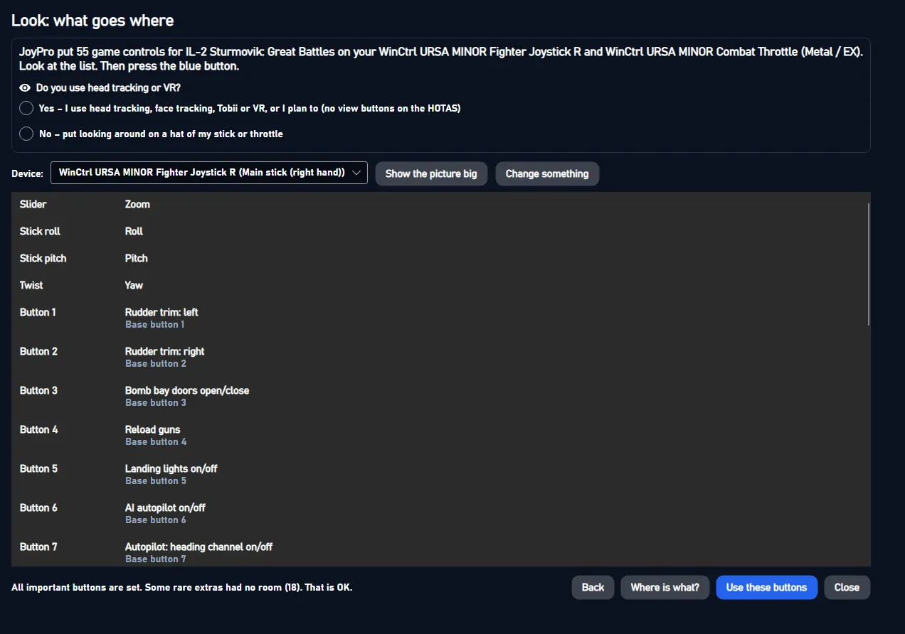

Jūs vēlaties, lai jūsu stūre darbotos jūsu spēlē. Jūs nevēlaties vispirms mācīties JoyPro. Šī lapa ir jums.
JoyPro apskata jūsu stūri, gāzes sviru un pedāļus. Tas pats uz tiem novieto svarīgās spēles vadības komandas. Jūs apskatāt rezultātu un noklikšķināt divas zilas pogas. Tas ir viss.
- Iestatīt visu manā vietā
lapā Sākums - Izmantot šīs pogas
jaunajā logā - Ierakstīt manā spēlē
nākamā zilā poga - Lidojiet
palaidiet spēli
#Pirms sākat
- Lejupielādējiet JoyPro un izpakojiet to: Lejupielāde un instalēšana.
- Pievienojiet savu stūri, gāzes sviru un pedāļus.
- Vienreiz palaidiet spēli, pēc tam aizveriet to. Dažas spēles savus vadības failus izveido tikai tad.
- Turiet spēli aizvērtu, kamēr JoyPro tajā raksta.
#Ātrais ceļš soli pa solim
- Palaidiet JoyPro. Pirmajā reizē logs parāda jūsu spēles. Nospiediet Gatavs, un iestatīt visu manā vietā. Tad 2. soli varat izlaist.
- Nospiediet Iestatīt visu manā vietā. Tas atrodas lapā Sākums, kartītē "Iestatīt ierīces". To pašu dara atbilde Lai mana stūre vienkārši strādā sveicienā (JoyPro pirmais jautājums pēc pirmās palaišanas).
- Apskatiet sarakstu. Tajā teikts, ko dara katra poga, piemēram, "Poga 4: Pārlādēt ieročus". Rādīt attēlu lielu parāda jūsu stūri ar katru pogu.
- Nospiediet Izmantot šīs pogas. Tagad JoyPro ir jūsu pogas. Jūsu spēle vēl nemainās.
- Nospiediet Ierakstīt manā spēlē. Tagad jūsu spēlei ir jūsu pogas. JoyPro patur veco kopiju.
- Lidojiet. Lapa Sākums saka "Izdevās!". Palaidiet spēli un lidojiet.



Vienlaikus zila ir tikai viena poga. Noklikšķiniet uz zilās, un nākamā kļūst zila.
#Jautājums par galvas izsekošanu
Lidojumu simulatoram saraksts jautā: Vai izmantojat galvas izsekošanu vai VR? Atbildiet Jā, ja skatāties apkārt, kustinot galvu (TrackIR, tīmekļa kamera ar sejas izsekošanu, Tobii vai VR), vai to plānojat. Tad uz jūsu stūres nenonāk skata pogas, tikai “centrēt skatu”. Atbildiet Nē, ja skatāties apkārt ar stūri: apskatīšanos saņem Hat slēdzis. Skatiet Galvas izsekošana un apskatīšanās.
"Visas svarīgās pogas ir iestatītas. Dažām retām papildu funkcijām nepietika vietas (18). Tas ir labi." Tā ir laba ziņa. Jūsu stūrei ir mazāk pogu, nekā spēlei ir vadības komandu. Visas svarīgās ir uz jūsu stūres.
#Spēlei jau ir pogas
Vai iepriekš iestatījāt pogas spēlē? Tad Ierakstīt manā spēlē uzdod vienu jautājumu:
| Atbilde | Kas notiek |
|---|---|
| Izmantot jaunās | JoyPro pogas aizstāj vecās. JoyPro patur veco kopiju. |
| Paturēt arī vecās | Jūsu jaunās pogas nonāk blakus vecajām. Nekas netiek noņemts. |
| Atcelt | Nekas netiek ierakstīts. Kad esat gatavs, vēlreiz nospiediet Ierakstīt manā spēlē. |


#ACE COMBAT un citas tikai Xbox pults spēles
ACE COMBAT 8 un Hell Let Loose: Vietnam pazīst tikai Xbox kontrolieri. Tās neredz jūsu stūri. JoyPro pārvērš jūsu stūri mākslīgā pultī (virtuālā Xbox pultī). Šajās spēlēs nekas netiek ierakstīts.
- Iestatīt visu manā vietā
tad Izmantot šīs pogas - Iestatīt mākslīgo pulti
otrā zilā poga - Tests
pakustiniet stūri - Palaidiet spēli
pagaidiet tās sākuma ekrānu - Alt+Tab, Sākt
tad Alt+Tab atpakaļ
- Nospiediet Iestatīt visu manā vietā, pēc tam Izmantot šīs pogas.
- Nākamā zilā poga ir Iestatīt mākslīgo pulti. Atveras lapa Virtuālais joystick.
- Pirmajā reizē tai vajag bezmaksas palīgrīku ViGEmBus. Atzīmējiet lodziņu zem licences. Pēc tam nospiediet Instalēt ViGEmBus. Windows prasa atļauju: noklikšķiniet Jā.
- Nospiediet Tests. Pakustiniet stūri. Kontroliera attēls arī kustas.
- Palaidiet spēli. Pagaidiet tās sākuma ekrānu.
- Turiet nospiestu Alt un nospiediet Tab. Jūs esat atpakaļ JoyPro. Nospiediet Sākt.
- Vēlreiz nospiediet Alt+Tab. Jūs esat atpakaļ spēlē. Lidojiet!
Nospiediet Sākt tikai tad, kad spēle rāda sākuma ekrānu. Par agru? JoyPro raksta „Par agru“. Nospiediet Apturēt, tad Sākt. Dariet tā katru reizi, kad spēlējat.
Vairāk par šīm spēlēm: Spēlēt tikai Xbox pults spēli ar HOTAS un ACE COMBAT.
#Kaut kas nogāja greizi?
- Nav atrasta neviena spēle vai stūre. Pievienojiet stūri vai vienreiz palaidiet spēli. Pēc tam nospiediet Mēģināt vēlreiz.
- Vēlaties vairāk izvēlēties paši. Nospiediet Iestatīt soli pa solim. Tas atver iestatīšanas vedni ar visiem tā soļiem.
- Vēlaties atpakaļ vecās pogas. Skatiet Atsaukt ātro iestatīšanu.
- Vēlaties citu pogu kādai vienai lietai. Skatiet Vēlāk nomainīt vienu pogu.
#Vienkārši vārdi
Vai vēlaties lielu tekstu un ļoti īsus teikumus? Atzīmējiet Vienkārši vārdi: liels teksts, īsi teikumi sveicienā vai pirmajā logā. Katrā ceļveža kartītē ir arī Vieglāki vārdi. Skatiet Vienkārši vārdi, ceļveži un F1.
#Ko dara ātrā iestatīšana
- Tas ir iestatīšanas vednis, kas darbojas pats. Tas izmanto savus noklusējumus: jūsu ierīces un to ierastos uzdevumus, visus gaisa kuģus vienlīdzīgi, bez modifikatora.
- Tas iestata tikai tās spēles, kurās uz jūsu stūrēm vēl nekā nav. Lapas Sākums kartīte tās nosauc: "Iestatīt ierīces spēlei War Thunder un Star Citizen".
- Kur likt funkcijas? nāk no jūsu pēdējās izvēles vednī (sākumā vidus). Skatiet Kur likt funkcijas?.
- Ierīce, ko JoyPro nepazīst, tiek iestatīta kā parasta sava veida ierīce. Stūres kustināšana vada, poga 1 šauj, pirmais Hat slēdzis trimmē, pirmā svira ir gāzes svira. Lodziņš augšā to pasaka.
- Kaut ko mainīt parāda rīkus: pārvietot, samainīt vai izlaist funkciju un atlikt to atpakaļ. Tas parāda arī to, kas neiederējās.
- Spēles, kurās piesaistes veicāt paši, ir uzskaitītas zem kartītes. Importēt, tad aizpildīt robus vispirms paņem jūsu piesaistes; tad iestatīšana izmanto tikai brīvās vadīklas. Spēles, kas jau ir jūsu profilā, saņem Aizpildīt robus....
- Izmantot šīs pogas ir viens solis profila vēsturē. Viens Atsaukt (Ctrl+Z) visu atsauc.
- Ierakstīt manā spēlē ir šo spēļu eksports. Tas vispirms izveido spēles failu rezerves kopiju, tāpat kā eksporta lapa.
- Pēc tam īss ceļvedis parāda, kur vēlāk mainīt pogu. Tas beidzas ar "Gatavs! Palaidiet spēli".
#Ātrās iestatīšanas aizkulises
Ātrais ceļš palaiž vedņa dzinēja soļus, tos nerādot: engine setup devices, engine setup aircraft un engine setup plan līdz pārskatam. Izmantot šīs pogas palaiž engine setup apply (viena profila versija). Ierakstīt manā spēlē palaiž spēles eksportu ar eksporta lapas iestatījumiem un rezerves kopiju. Spēlēm tikai ar pulti tas tā vietā atver lapu Virtuālais joystick; to tabula nāk no engine vjoy map. GUI: QuickSetupCommand lapā Sākums, StartQuickSetupAsync (MainWindowViewModel.AutoSetupStart.cs), logs Views/SetupWizardWindow.axaml.
#Saistītās lapas
- Jūsu pirmais profils 10 minūtēs: ātrais ceļš un ceļš ar roku
- Palīdzības režīms un ceļveži: sveiciens un tā atbildes
- Palīdzība un BUJ